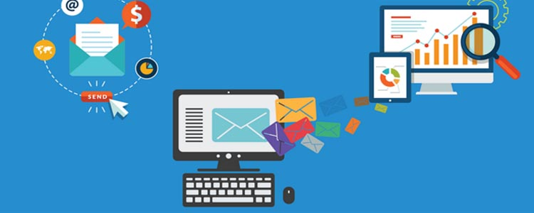

5 Dicas para Evitar que Seu público se Canse da sua Marca
by WebMKT
Posted on 19/09/2017

Suas métricas de análise não param de indicar quedas no engajamento de seu público e parece que ninguém está prestando atenção ao seu marketing? Bom, isso pode acontecer com as melhores marcas e é por isso que preparamos este post pra você!
Quem nunca assinou uma Newsletter ou seguiu uma página de uma marca porque se interessou por um assunto em particular em um momento e, logo na primeira semana, se deu conta de que foi uma má idéia porque sua caixa de e-mails ou sua timeline está agora lotada com dezenas de mensagens sobre a empresa e a marca e novos produtos, ações, promoções, eventos, novidades e uma inundação de conteúdos nem sequer relevante a sua intenção ao buscar contato com a marca?
É muito mais comum do que parece, e se você já provou isso sabe que não demora muito para que o usuário se fatigue e busque um cancelamento da assinatura ou os próprios mecanismos de filtragem de conteúdo nos e-mails e redes sociais percebam o desinteresse da audiência no seu conteúdo e passam a direcionar suas ações direto para uma caixa de spam ou bloqueá-las automaticamente.
Aqui vão 5 dicas de boas práticas para aplicar em sua estratégia de Marketing e não cair na lista negra dos seus clientes!
1. Não seja um Spam
2. Mantenha o Foco
3. Acrescente Valor
4. Objetividade
5. Análise e Teste
Não se esqueça, os frutos do marketing digital vem após um ciclo de trabalho e persistência é preciso cuidado e atenção a alguns detalhes antes de "ver a roda girar" por conta própria. Não deixe de nos contar sobre os resultados, Boa Sorte!